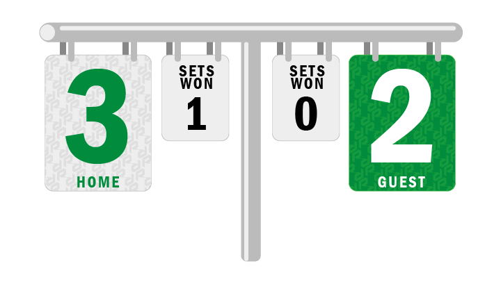
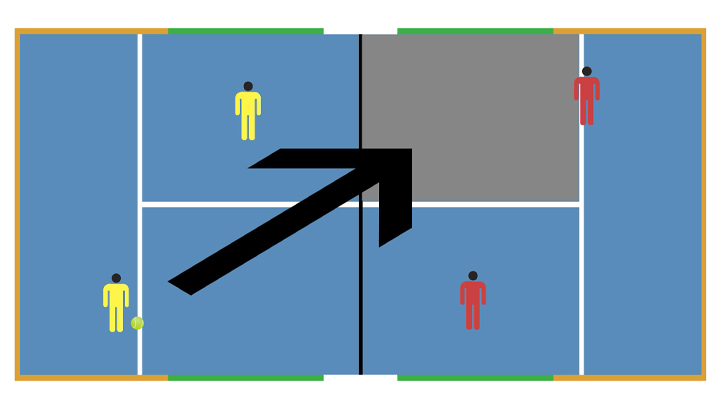

JayPadel

JayPadel
Les dimentions
Les règles
Les points :
- Le padel emprunte au tennis son système de points. - Il faut 6 jeux pour gagner un set et l’équipe qui gagne 2 sets remporte la partie. - Un jeu se décompose exactement comme au tennis 15/0, 30/0, 40/0, avantage, égalité, etc… - En cas d’égalité à 6/6, on procède au jeu décisif comme au tennis.
Le service :
- La mise en jeu se fait en diagonale comme au tennis, avec 2 tentatives de services (première et deuxième balle). - Le serveur est derrière la ligne de service, de son côté de la diagonale. - Le receveur se place où il veut sur le terrain, dans la diagonale du serveur. - Le serveur fait d’abord rebondir la balle puis la frappe sous la ceinture. La balle et le serveur sont derrière la ligne. - La balle doit rebondir dans le carré de service opposé avant d’être frappée par le receveur. - Si la balle ne rebondit pas dans le carré, reste dans le filet, ou heurte une paroi avant le rebond elle est faute. - Si elle rebondit dans le carré et touche le grillage ensuite elle est faute. - La balle peut toucher le vitrage après le rebond dans le carré de service. - Si la balle frappe le filet et rebondit dans le carré elle est let, on remet la mise en jeu.
En jeu :
- Une fois la balle en jeu, toutes les balles qui passent le filet doivent d’abord rebondir sur le sol du camp adverse avant de toucher une paroi. - On peut frapper la balle à la volée. - Les joueurs peuvent frapper la balle après un rebond sur une paroi pour la renvoyer dans le camp adverse. - On peut frapper la balle pour qu’elle rebondisse sur la partie vitrée de notre propre camp afin de la faire passer de l’autre côté du filet. - Bien sûr comme au tennis, la balle ne peut rebondir qu’une seule fois dans votre camp, et elle ne peut être frappée qu’une fois. - On peut smasher la balle assez fort pour qu’après le rebond elle sorte des limites du court ! Mais l’équipe adverse pourra courir la chercher et tenter de la remettre en jeu.